<!DOCTYPE html>
<html lang="es">
<head>
  <meta charset="UTF-8" />
  <meta name="viewport" content="width=device-width, initial-scale=1.0"/>
  <title>Visor Único</title>

  <!-- Favicon del proyecto -->
  <link rel="icon" href="../assets/img/ennde3d_icon.png" type="image/png">

  <!-- Estilos comunes y específicos -->
  <link rel="stylesheet" href="/styles/bootstrap.css">       
  <link rel="stylesheet" href="/styles/loader.css">           
  <link rel="stylesheet" href="/styles/sidebar.css">          
  <link rel="stylesheet" href="/styles/viewer.css">         

  <!-- Scripts principales -->
  <script type="module" src="/js/loader.js" defer></script>                      
  <script type="module" src="/js/scene/init/initSingleViewer.js" defer></script> 
  <script type="module" src="/js/ui/viewerMenus.js" defer></script>              
</head>

<body class="bg-black">

  <!-- LOADER DE INICIO (animación de cubo) -->
  <div id="loader-container">
    <div class="scene">
      <div class="cube-wrapper">
        <div class="cube">
          <div class="cube-faces">
            <div class="cube-face shadow"></div>
            <div class="cube-face bottom"></div>
            <div class="cube-face top"></div>
            <div class="cube-face left"></div>
            <div class="cube-face right"></div>
            <div class="cube-face back"></div>
            <div class="cube-face front"></div>
          </div>
        </div>
      </div>
    </div>
  </div>

  <!-- BOTÓN DE RETORNO A INDEX -->
  <button id="back" onclick="window.location.href = '/index.html'">
    <svg fill="#000000" xmlns="http://www.w3.org/2000/svg" viewBox="0 0 24 24"><path d="M15 18l-6-6 6-6"/></svg>
  </button>

  <!-- CONTENEDOR PRINCIPAL DEL VISOR + SIDEBAR -->
  <div id="visorWrapper">
    <div id="viewerContainer">
      <div id="indexViewer1" class="w-100 h-100 position-relative overflow-hidden"></div>
    </div>

    <!-- SIDEBAR CON ICONOS -->
    <aside id="sidebar" class="sidebar">
      <div id="toolbar" class="d-flex flex-column align-items-center justify-content-center gap-5">
        <button id="btn-world" class="btnPrincipales world">
          
        </button>
        <button class="material btnPrincipales" id="btn-axes">
          
        </button>
        <button class="magnet btnPrincipales" id="btn-material">
          
        </button>
        <button class="info btnPrincipales">
          
        </button>
        <button id="btn-goToCompare" class="btnPrincipales compare">
        
        </button>


      </div>

      <!-- PANEL DE MENÚS (mismo comportamiento que visor doble) -->
      <div id="menuPanel" class="menu-panel overflow-hidden">
        <div id="menu-world" class="menu-content d-none h-100">Menú Mundo hola hola</div>
        <div id="menu-modelo" class="menu-content d-none h-100">Menú Modelo</div>
      </div>
    </aside>
  </div>

</body>
</html>
